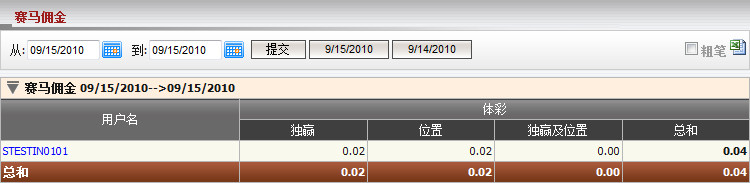
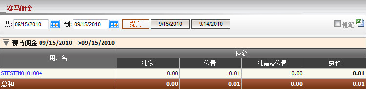
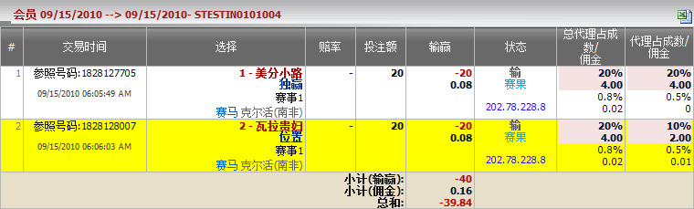

赛马佣金
定义:
这是赛马佣金报告, 其中个别投注类型的收入细节 (独赢, 位置和独赢/位置) 将被列出。 这份报告计算出总代理的收入或输额, 根据个别代理的投注类型 (图1.1)。

图 1.1
用词注解:
-
独赢: 扣除代理佣金后, 总代理从上线出接收到的佣金数额, 根据独赢投注类型。
- 位置: 扣除代理佣金后, 总代理从上线出接收到的佣金数额, 根据位置投注类型。
- 独赢及位置: 扣除代理佣金后, 总代理从上线出收到的佣金数额, 根据独赢及位置投注类型。
- 总和: 扣除代理佣金后, 总代理从上线出收到的总佣金数额。
点击代理用户名以查看代理于个别会员的投注类型的收入或输额 (图1.2)。

图 1.2
用词注解:
-
独赢: 扣除代理佣金后, 总代理从上线出接收到的佣金数额, 根据独赢投注类型。
- 位置: 扣除代理佣金后, 总代理从上线出接收到的佣金数额, 根据位置投注类型。
- 独赢及位置: 扣除代理佣金后, 总代理从上线出收到的佣金数额, 根据独赢及位置投注类型。
- 总和: 扣除代理佣金后, 总代理从上线出收到的总佣金数额。
如何理解报告:
为计算佣金, 我们必须点击用户名 (例子: member1), 然后会员投注历史页面将被开启和显示每个投注的细节如下 (图1.3):

图 1.3
而现在, 例子将告诉您如何计算佣金。让我们计算master01, agent1的佣金数额如图1.1及图1.2所示。
图 1.2:
- 独赢 = 投注额 * 代理佣金 * (1 - 代理占成) - 投注额 * 会员佣金 = 20 * 0.5% * (1 - 20%) - 20 * 0.4% = 0
- 位置 = 投注额 * 代理佣金 * (1 - 代理占成) - 投注额 * 会员佣金 = 20 * 0.5% * (1 - 10%) - 20 * 0.4% = 0.01
- 独赢及位置 = 0
- 总和 = 独赢 + 位置 + 独赢及位置 = 0 + 0.01 + 0 = 0.01
图 1.1:
- 独赢 = 投注额 * 会员佣金 * [1 - (总代理占成 + 代理占成)] - 投注额 * 代理佣金 * (1 - 代理占成) = 20 * 0.8% * [1 - (20% + 20%)] - 20 * 0.5% * (1 - 20%) = 0.02
- 位置 = 投注额 * 总代理佣金 * [1 - (总代理占成 + 代理占成)] - 投注额 * 代理佣金 * (1 - 代理占成) = 20*0.8% * [1 - (20% + 10%)] - 20 * 0.5% * (1 - 10%) = 0.02
- 独赢及位置 = 0
- 总和 = 独赢 + 位置 + 独赢及位置 = 0.02 + 0.02 + 0= 0.04